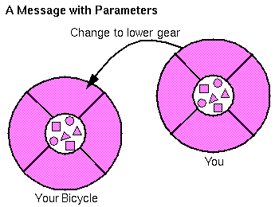

|
| Object-Oriented Programming Concepts: A Primer |
An single object alone is generally not very useful and usally appears as a single component of a larger program or application that contains many other objects. Through the interaction of these objects that programmers achieve higher order functionality and more complex behaviours. Your bicycle hanging from a hook in the garage is just a bunch of titanium alloy and rubber; by itself the bicycle is incapable of any activity. The bicycle is useful only when when another object (you) interacts with it (starts pedaling).Software objects interact and communicate with each other via messages. When object A wants object B to perform one of its methods, object A sends a message to object B.
Sometimes the receiving object needs more information so that it knows exactly what to do--when you want to change gears on your bicycle, you have to indicate which gear you want. This information is passed along with the message as parameters.
 Three components comprise a message:
These three components are enough information for the receiving object to perform the desired method. No other information or context is required. Thus, objects in different processes or even on different machines can communicate to each other through the use of messages.
- the object to whom the message is addressed (bicycle)
- the name of the method to perform (change gears)
- any parameters needed by the method.
The Benefit of Messages
- Since everything that an object can do is expressed through its methods, message passing supports all possible interactions between objects.
- To send and receive messages back and forth objects don't need to be in the same process or even on the same machine.
|
| Object-Oriented Programming Concepts: A Primer |